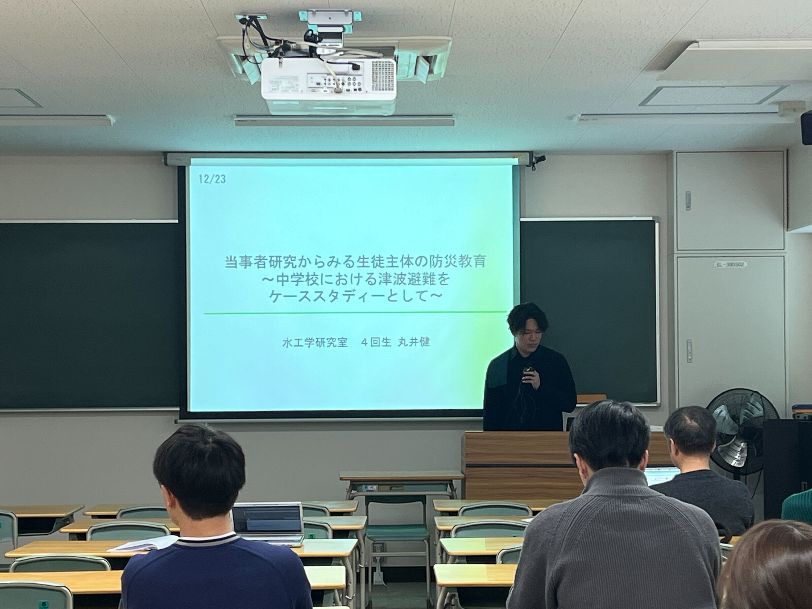
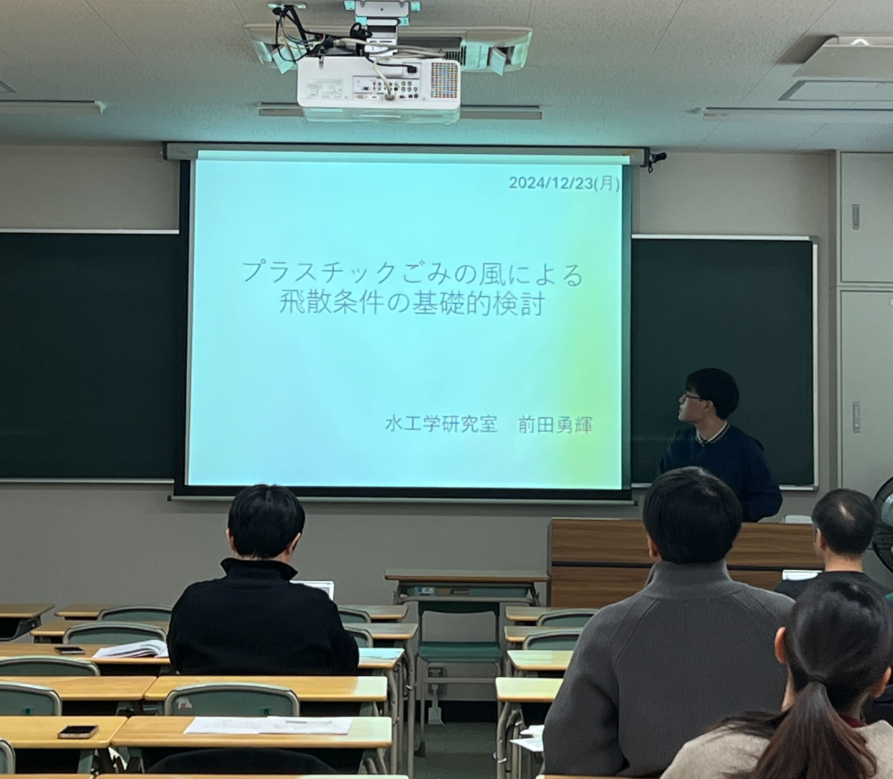
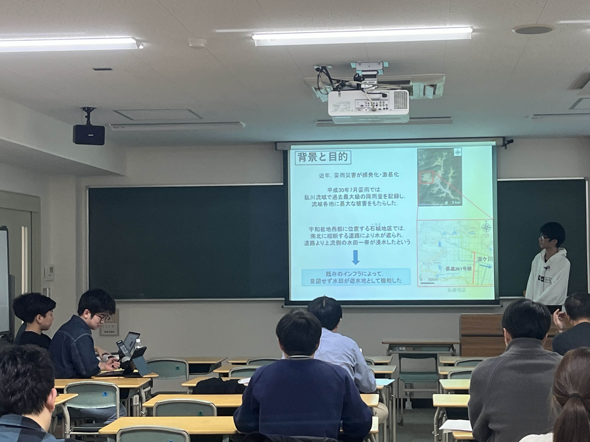

mizukan
イベント
2024年度 水系研究室合同中間発表
12月23日の2〜4限にかけて、水系研究室合同中間発表を行いました。
午前中最初のセッションでは大学院生、午後のセッションでは4回生がそれぞれ発表しました。
中間発表に向けて発表資料及び概要の作成等、
非常に忙しい時期でしたが、
何とか中間発表を終えることができました！



年末年始はしっかり休んで、年明け後の研究も頑張りましょう！('v`ｂ)
皆さんお疲れ様でした！
文責 平尾